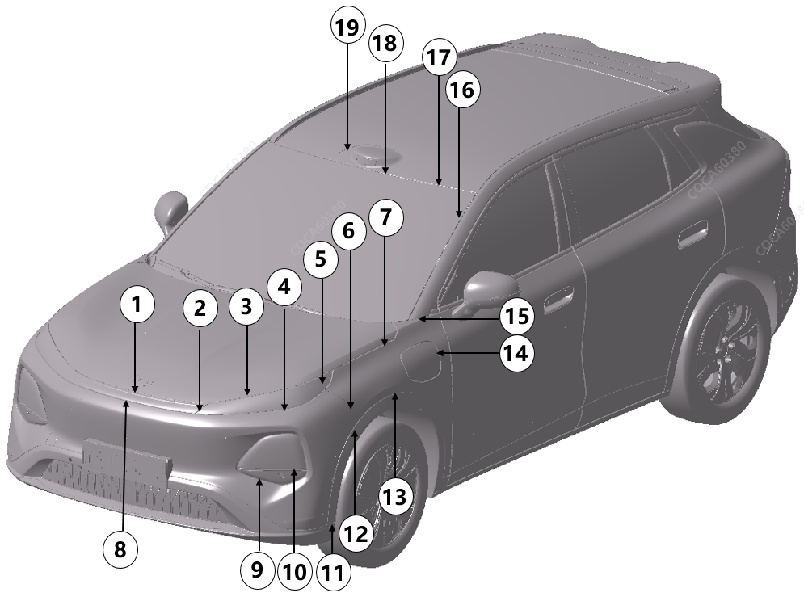

|
位置 |
详细说明 |
允许间隙尺寸（mm） |
允许段差尺寸（mm） |
|---|---|---|---|
|
1 |
前贯穿灯/前保上装饰件相对于前罩 |
2.0～5.5，P≤2.0 |
-2.0～2.0，P≤2.0 |
|
2 |
日行灯相对于前贯穿灯/前保上装饰件 |
0.5～3.5，P≤1.5，S≤1.5 |
-1.5～1.5，P≤1.5，S≤1.5 |
|
3 |
日行灯相对于前罩 |
2.0～5.5，P≤2.0 |
/ |
|
4 |
日行灯相对于前保 |
0～3.5 |
/ |
|
5 |
日行灯相对于翼子板 |
0.3～2.7，P≤1.2 |
/ |
|
6 |
前保相对于翼子板 |
0～1.0 |
-1.2～0.2 |
|
7 |
前罩相对于翼子板 |
2.5～4.5，P≤1.0，S≤1.0 |
-1.5~1.5，S≤1.0 |
|
8 |
前贯穿灯/前保上装饰件相对于前保 |
0.5～3.5，P≤1.2 |
/ |
|
9 |
前保相对于远近光灯 |
胶皮与灯具间隙≤0.5mm |
/ |
|
10 |
雾灯盖板相对于远近光灯 |
0.5～3.5 |
-0.5~0.5 |
|
11 |
前保下本体相对于前轮眉 |
0～1.5 |
/ |
|
12 |
前轮眉相对于前保 |
0~1.0 |
/ |
|
13 |
前轮眉相对于翼子板 |
0~1.0 |
/ |
|
14 |
充电口相对于翼子板 |
1.7~3.3，P≤0.8 |
上部：-1.7~-0.1，P≤0.8 中部：-1.7~+0.5渐变 下部：-1.1~+0.5，P≤0.8 |
|
15 |
翼子板相对于A柱 |
1.0~3.0 |
/ |
|
16 |
前挡风玻璃相对于侧围 |
2.5~5.5，P≤1.5 |
/ |
|
17 |
前挡风玻璃相对于天幕玻璃/顶盖 |
2.0~5.0 |
天幕玻璃版-1.5~1.5，P≤2 顶盖版-3.0~0 |
|
18 |
顶盖装饰件相对于前挡风玻璃 |
2.0~5.0 |
-1.5~1.5，P≤2.0 |
|
19 |
顶盖装饰件相对于天幕玻璃 |
1.0～4.0 |
-1.5~1.5 |
